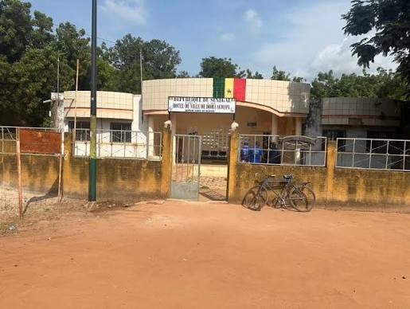
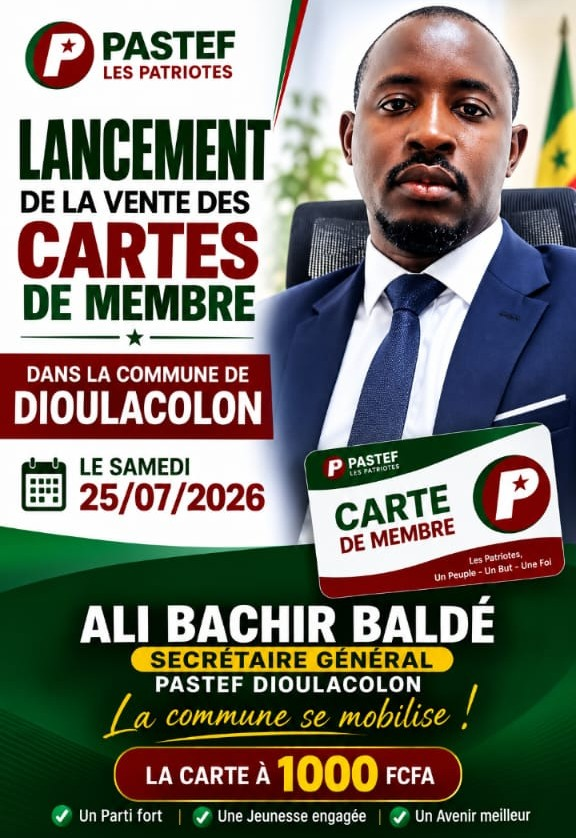
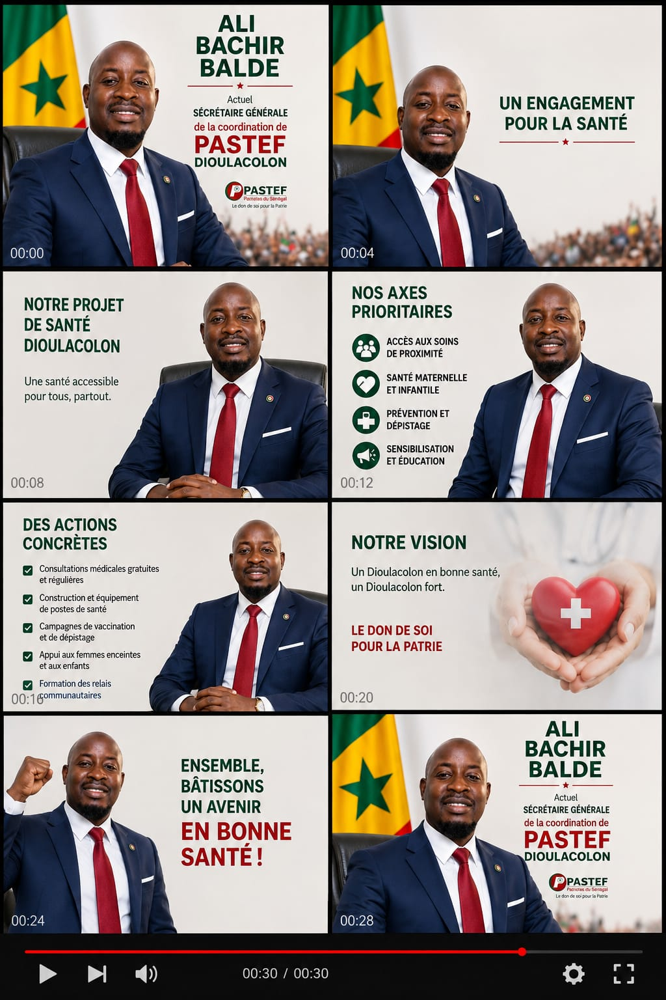
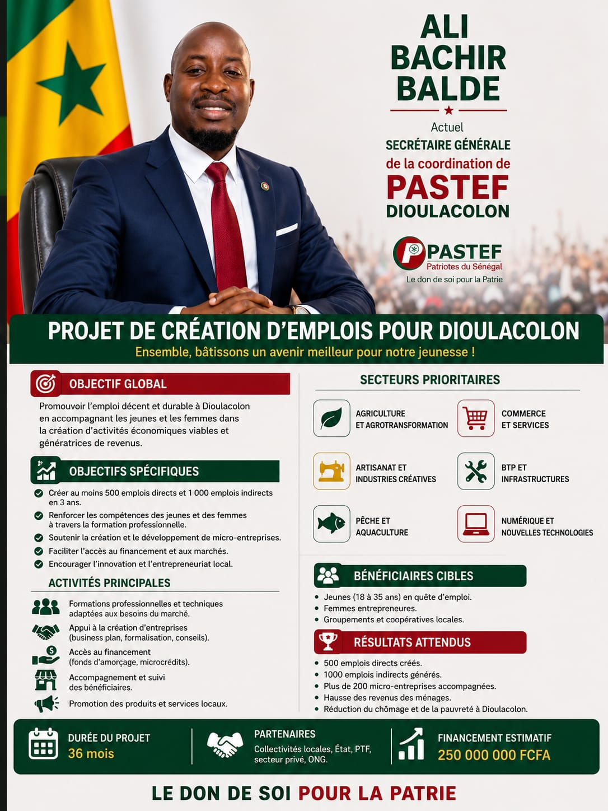
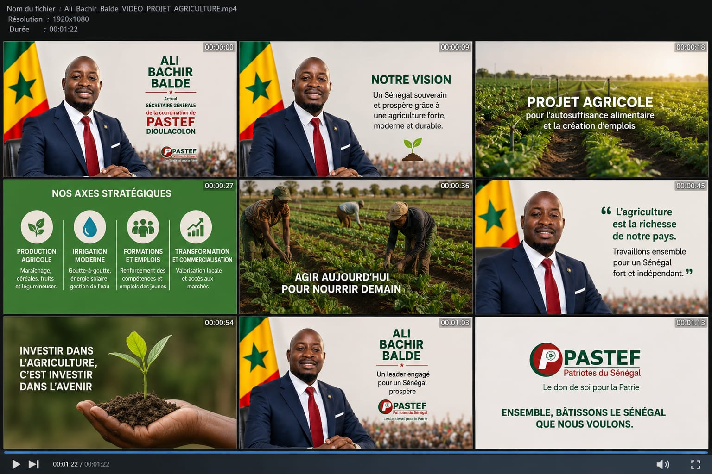
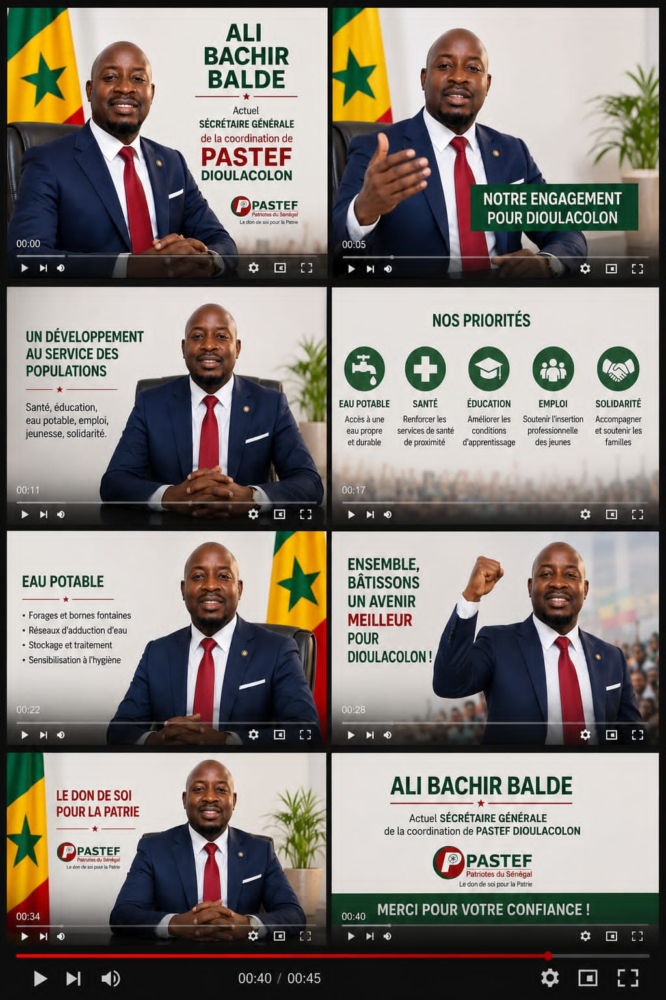
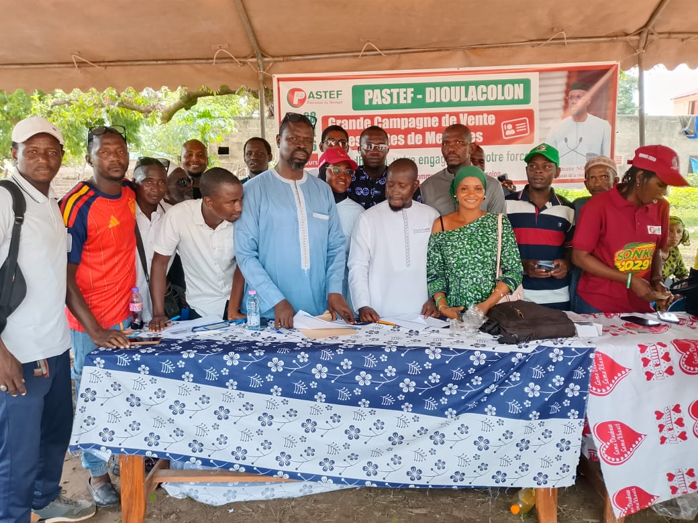
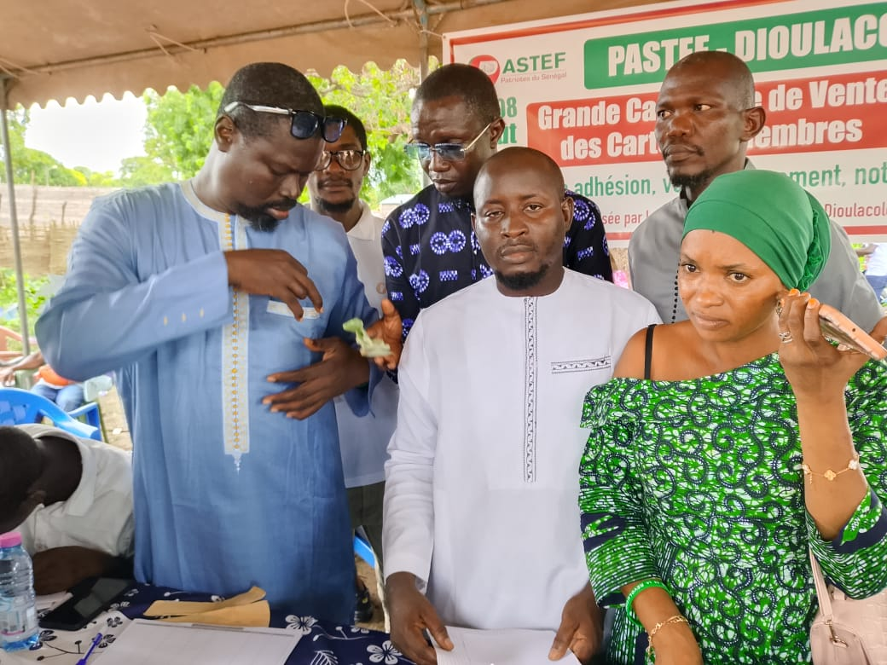
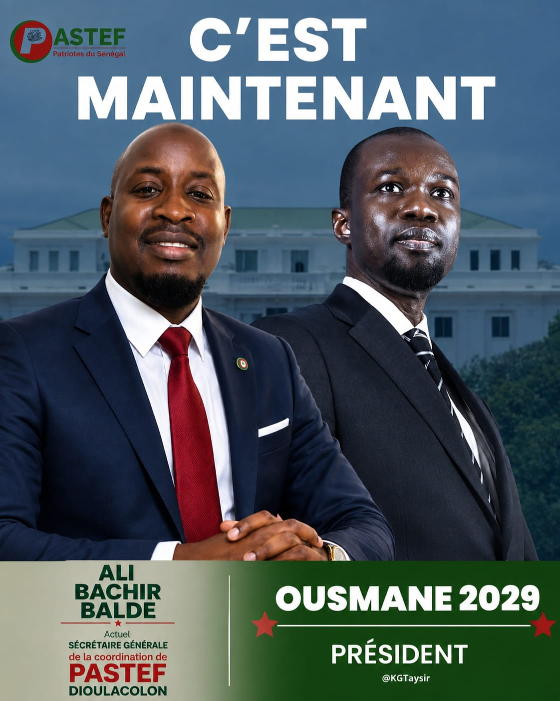
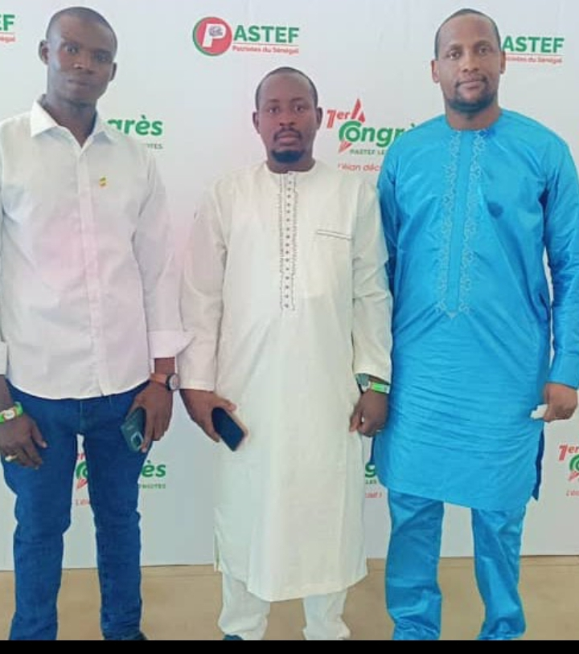

Ensemble pour une nouvelle vision de Dioulacolon.
💬 Rejoindre le groupe WhatsApp 📘 Suivre notre page FacebookJe suis Ali Bassirou Baldé, engagé pour un Dioulacolon plus uni, plus prospère et plus solidaire.
Ma vision est de placer les citoyens au cœur de chaque décision et de travailler avec transparence, responsabilité et détermination pour améliorer les conditions de vie de tous.
Soutenir les producteurs et valoriser les ressources locales.
Créer des opportunités pour la formation, l'emploi et l'entrepreneuriat.
Favoriser l'autonomisation des femmes et soutenir leurs initiatives.
Améliorer l'accès aux services de santé pour les populations.
Soutenir l'éducation, la formation et l'avenir de la jeunesse.
Développer les routes et les équipements nécessaires au développement de la commune.
Contribuer à améliorer l'accès à l'eau potable pour les populations.
Promouvoir une gouvernance de proximité, transparente et à l'écoute de la population.
Retrouvez ici nos activités, rencontres, visites de terrain et informations importantes.
Échanges et rencontres avec les populations de Dioulacolon.
Une dynamique fondée sur l'écoute, la proximité et la participation citoyenne.
Promouvoir les initiatives et les projets qui contribuent au développement local.
Notre engagement est notre plus grande force. Restons unis, disciplinés et mobilisés pour défendre nos idéaux et poursuivre notre travail au service de notre commune.
Chaque militant compte. Continuons à sensibiliser nos familles, nos voisins et nos amis, tout en faisant preuve de respect, de responsabilité et d'esprit de rassemblement.
Ensemble, avec détermination et solidarité, nous pouvons relever les défis et bâtir un avenir meilleur pour Dioulacolon.
Votre participation compte. Remplissez ce formulaire pour rejoindre notre communauté.
Découvrez les images de Dioulacolon, nos activités et nos rencontres avec les populations.










📍 Dioulacolon - Région de Kolda - Sénégal
📞 +221 77 318 98 02
📞 Appeler 💬 WhatsAppVous souhaitez participer au développement de Dioulacolon et suivre nos activités ?
💬 Rejoindre le groupe WhatsApp 📘 Suivre notre page FacebookEnsemble, mobilisons-nous pour construire un avenir meilleur pour Dioulacolon.